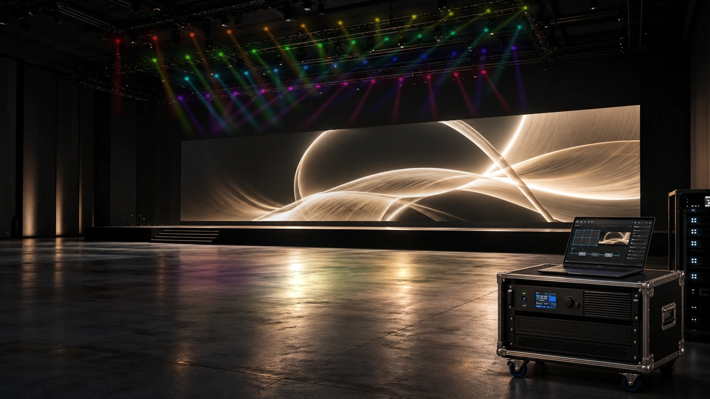
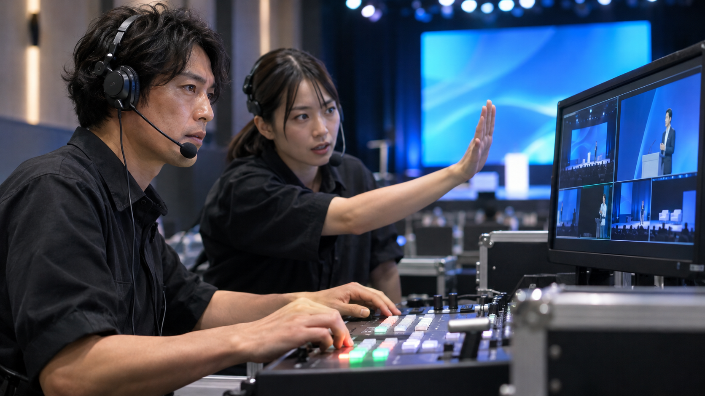
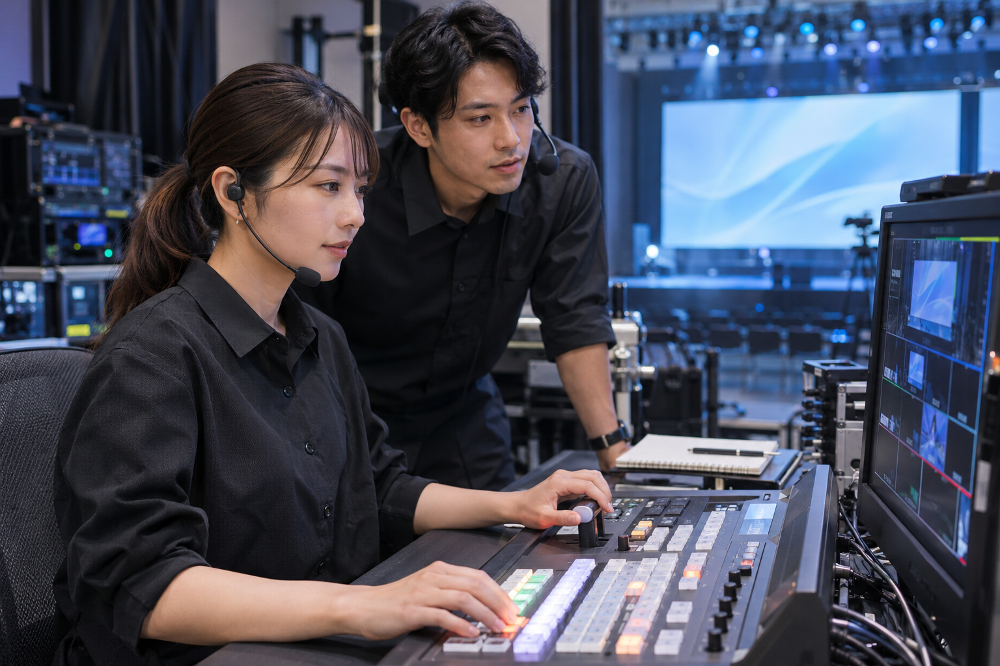

LOTUS / EVENT VISUAL & TECHNICAL
映像プランから、画面に映す瞬間まで空間演出のコンセプトビジュアル
THE LOTUS WAY
映像プランから、
本番の一瞬まで。
ひとつの工程だけではなく、
現場全体を見渡す技術を。
気になる工程を選んでみてください


映像について
画面内の映像に動きを加えた説明イメージです。人物の動作や実際の現場を撮影した動画ではありません。

映像について
画面内の映像に動きを加えた説明イメージです。人物の動作や実際の現場を撮影した動画ではありません。
TOOLS FOR YOUR IDEAS
道具を知ると、
映像はもっと面白い。

空間をつくる、LED。
曲面・床面・透過型など、LEDの種類を一覧で。
↗
映像と音声を、操る。
↗大きさを、試してみる。
↗機材の写真・仕様の出典は各ページへ。サイズ図は検討用の説明図です。
01 / OUR SERVICES
映す技術と、
届ける機材。
本番を動かす人。映像を届ける道具。
必要な役割から、LOTUSが加わります。

01 TECHNICAL SUPPORT
本番の一瞬を、
確かな操作で。
設営から、本番の切り替え、撤去まで。
映像の現場に、必要な技術を。
オペ機材・LEDプロセッサーの操作から、チーフとしての構成整理・現場指示まで。制作チームと役割をそろえ、進行に合わせて映像をつなぎます。
- 仕込む
- 機材の接続・設定、表示の確認
- 操る
- 進行に合わせた切り替え・送出
- つなぐ
- 現場指示と、各セクションとの連携
02 EQUIPMENT RENTAL
その空間に、
合う映像機材を。
LEDの画面から、映像を扱う機器まで。
用途と運用から、構成を考えます。
会場の広さ、見せたい素材、当日の使い方。条件を伺い、必要な機材の手配・レンタルをご案内します。型番が決まっていない段階でもご相談ください。
映像機材レンタルを見る技術スタッフだけでも。機材だけでも。
必要な工程から、ご相談ください。
YOUR PROJECT / OUR ROLE
頼みたいことから、
LOTUSの役割を見る。
制作会社・映像会社の皆様
現場のチームに、
技術と機材を。
技術スタッフの手配、映像機材のレンタル。人員・機材それぞれでも、組み合わせてもご相談ください。
協力できる工程を見る スタッフの担当事例 機材レンタルを見る主催者・企業のご担当者様
届けたい体験を、
映像の構成へ。
会場で何を映したいか。機材や担当が決まっていなくても、用途からご覧いただけます。
用途から映像の構成を見る 相談から当日までの流れYOUR SCENE / YOUR NEXT STEP
その場に、
どんな体験をつくる？
届けたいことを選ぶと、
映像の役割が見えてきます。

発表会・カンファレンス話す人も、資料も。
話す人も、資料も。
会場の後ろまで意識する。
LOTUSがつなぐこと
登壇・資料・動画を、進行に合わせて切り替えます。
まず考えること
客席から文字を読めるか。画面の大きさだけでなく、文字量と見る距離も整理します。
空間の画像に、画面内の映像の動きを加えた説明イメージです。実際の現場を撮影した動画ではありません。
このイメージで相談する 進行に合わせた映像切り替え 日程・機材が未定でも。選んだ用途を相談画面へ引き継ぎます。

展示会・展示空間近づきたくなる入口。
近づきたくなる入口。
近くで伝わる情報。
LOTUSがつなぐこと
画面の向きと映す内容から、機材と運用を組み立てます。
まず考えること
通路から何が見えるか。立ち止まる場所と、近くで見る情報を分けて考えます。
このイメージで相談する 画面・機材の選択肢 日程・機材が未定でも。選んだ用途を相談画面へ引き継ぎます。

ステージ・ライブその瞬間に、
その瞬間に、
その画面へ。
LOTUSがつなぐこと
素材・画面・合図をそろえ、進行に合わせた操作を担います。
まず考えること
いつ、どこに、何を映すか。リハーサルと本番の担当をあわせて整理します。
このイメージで相談する 歌詞表示・映像再生の担当事例 日程・機材が未定でも。選んだ用途を相談画面へ引き継ぎます。
選び直せます。ページのURLには選んだ用途だけを残します。
03 / FROM BRIEF TO SHOW
相談から、現場の終わりまで。
まずは、日程・会場・頼みたいことから。
ご相談
技術スタッフ、機材、または両方。必要な内容をお聞かせください。
内容の整理
担当工程、機材構成、当日の体制を具体的にします。
手配・準備
合意した内容に沿って準備し、進行や素材を共有します。
設営・本番・撤去
現場のチームと連携し、担当範囲を進めます。
04 / QUICK ANSWERS
ご相談の前に。
技術スタッフだけでも相談できますか？
設営・本番・撤去のうち、必要な工程からご相談いただけます。日程、担当業務、使用機材をお聞かせください。
機材の型番が決まっていなくても大丈夫ですか？
大丈夫です。画面を使う目的や、会場・映したい内容からご相談ください。仕様と手配可否は、利用日程に合わせてご案内します。
機材レンタルと本番対応を一緒に頼めますか？
あわせてご相談いただけます。レンタルする機材と、設営・操作・撤去の担当を整理して進めます。
LET’S TALK
どの工程からでも、
ご相談ください。
相談内容をまとめる技術提供と映像機材レンタル。ご希望に合わせて、担当範囲を整理します。